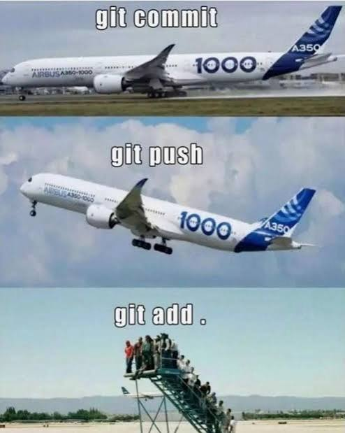
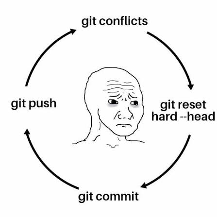
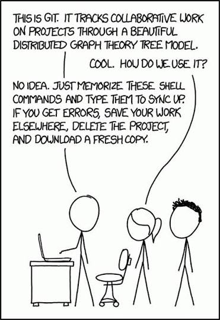

Action
Create a new repository
Create an empty project on GitLab first, and uncheck the README.md. Replace the example URL with the SSH URL shown by GitLab..
- Open a terminal in the folder you want to track.
- Initialize Git and make the first commit:
$ git init$ git add .$ git commit -m "Initial commit"$ git branch -M main- Connect the GitLab project and publish the branch:
$ git remote add origin git@gitlab.example.com:group/project.git$ git push -u origin mainAction
Clone an existing repository
Cloning downloads a project and sets up its remote connection. Copy the clone URL from the project page on GitLab. It is the project-sized version of "make me a copy".
$ git clone git@gitlab.example.com:group/project.git$ cd projectUse the actual folder name created by git clone in the cd command.
Action
Pull the latest changes
Before you start working, make sure you are on the branch you intend to update. Only this one will be updated.
$ git pullgit status first. If you have uncommitted work, commit it or save it temporarily (fit stash for example) before pulling.Action
Make a change, commit and push
Add to the staging area files you want to include before committing. A commit saves a snapshot locally. Pushing sends your commits to GitLab so others can access them.
Replace the file path and commit message with details about your work. To stage all current changes, use git add . instead of git add path/to/your-file.
$ git add path/to/your-file$ git commit -m "Describe your change"$ git pushgit status before committing. "Stuff" is not a helpful commit message, even if it is technically accurate.
Action
Go back to an old commit
Choose the command based on what you want to undo. These actions are different: revert adds a new commit, while restore changes files in your working folder. Read twice, undo once.
Undo something that you have already committed
Use git revert to create a new commit that reverses an earlier commit. This is the safer choice for commits already pushed or shared with others.
$ git log --oneline$ git revert COMMIT_ID$ git pushReplace COMMIT_ID with the identifier shown by git log.
Discard uncommitted changes to a file
git restore overwrites your uncommitted changes to the named file. Check the file first and make a backup with a commit or stash or put it in a new branchif you may need the changes.$ git restore path/to/your-fileyou can also restore all files in the working directory by omitting the file path:
$ git restore .Restore one file from an earlier commit
This puts that version of the file into your working folder. Review it, then commit the change if you want to keep it.
$ git log --oneline$ git restore --source=COMMIT_ID -- path/to/your-fileTip
Having knowledge on what you did with git status and git log
When something unexpected happens, pause the command roulette and check what Git sees. git status shows your branch and local changes; git log shows the recent commit history.
$ git status$ git log --oneline --graph --decorate -10Tip
Conflicts: Git needs a human opinion
A conflict happens when Git cannot automatically combine changes to the same part of a file. Your changes and the incoming changes both need to be reviewed. Git is just asking you to tell him what to keep.
- Open each conflicted file. Conflict markers look like this:
<<<<<<< HEAD
Your version
=======
Incoming version
>>>>>>> branch-name- Edit the file to keep the right content, and remove all conflict markers.
- Stage the resolved file and finish the merge:
$ git add path/to/resolved-file$ git status$ git commitReview the result before pushing. If Git says a rebase is in progress, do not run git commit; after resolving and staging, use git rebase --continue instead.
Tip
The terminal editor appeared. Suddenly, the keyboard makes no sense, and Escape is nowhere to be found.
Git may open a terminal editor when it needs a commit message. By default the editor is Vim, press Esc first, then type one of these commands and press Enter.
:wqsaves and exits. Use this to keep the commit message.:q!exits without saving. Use this to cancel editing the message.
If you ever use vim before I highly recommend you to change the default text editor. For that you can run:
$ git config --global core.editor "my_new_editor"If you use vscode you can set it as the default editor with: "vscode", if you use Rstudio you can set it with: "rstudio". If none of them, maybe nano could be an easier text editor to use.
Tip
Forgot to pull first? It happens.
If your push is rejected because the remote has new commits (usually you forgot to pull, or someone else is working on the same branch), your local commits are not lost. First make sure your local work is committed, then integrate the remote changes:
$ git status$ git pull --no-rebase$ git pushIf the pull reports a conflict, resolve it using the steps above, then push.
git push --force can overwrite commits on the shared repository and cause other issues.
